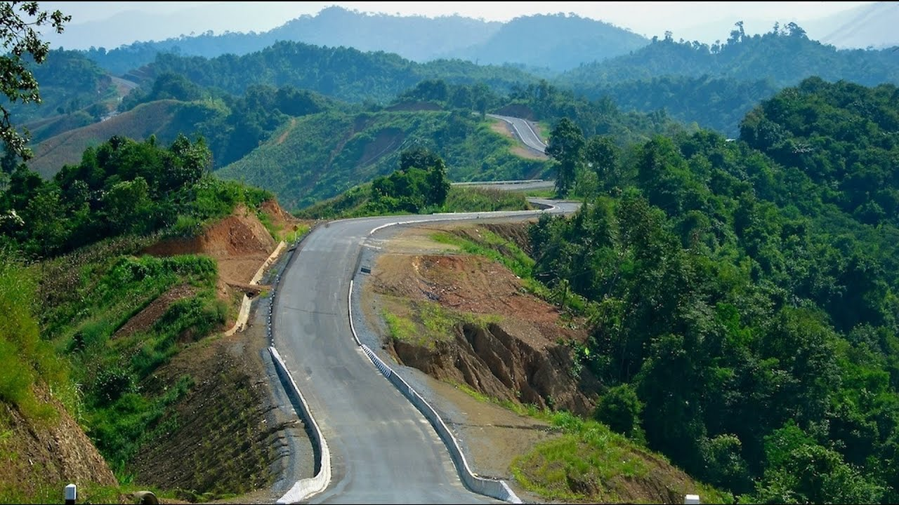

Even though summertime in Sajek Valley is not considered the perfect time to visit, we were blessed with the rain and the beautiful unexpected experience. The weather was hot before the rain started, but once we were blessed with the beautiful rain, clouds surrounded us, clod breeze and different shades of nature fulfilled our travel-thirsty hearts. This site includes some pictures I have taken on these walks.

Sometimes we walked around the resort we were staying at, other times we walked as far as our feet took us. Sajek Valley has some beautiful mountains including Konglak Hills where one can enjoy the beautiful sunrise and sunset on any day.
